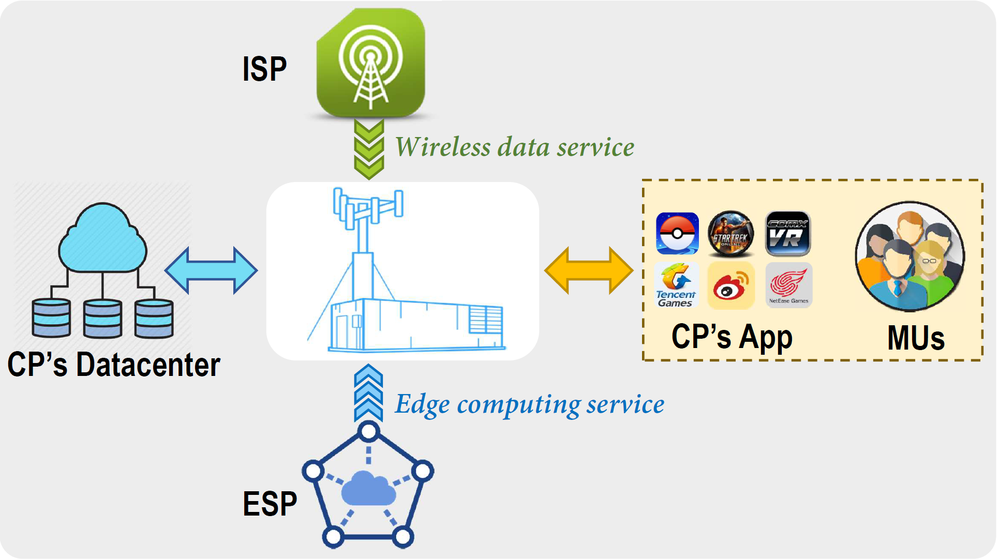
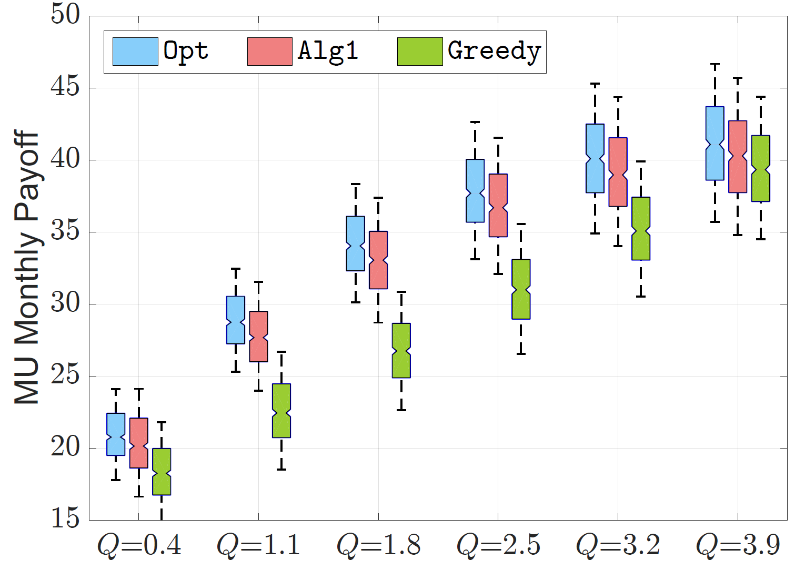
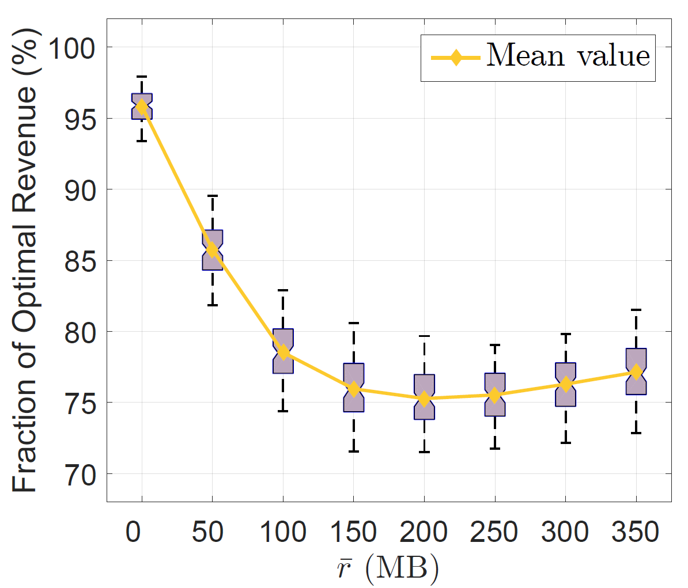
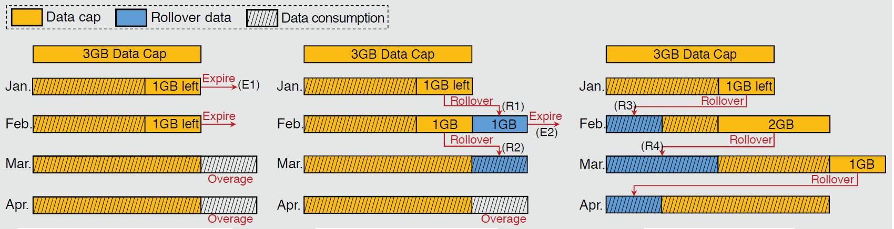
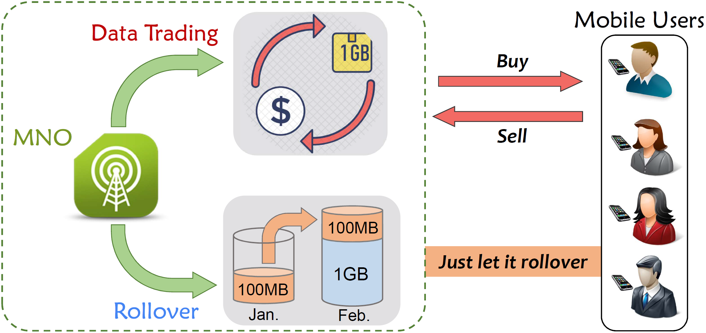
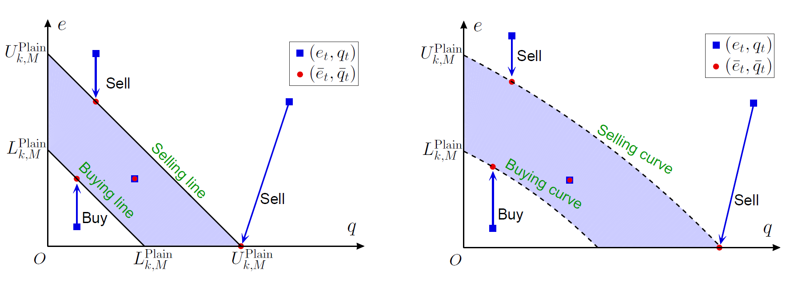
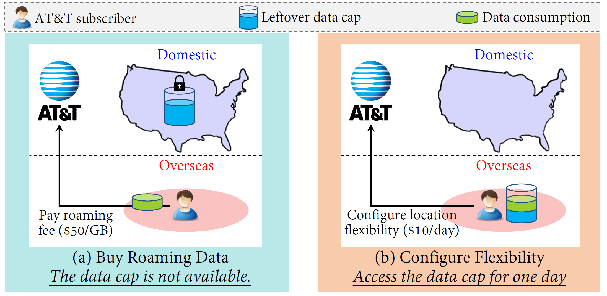
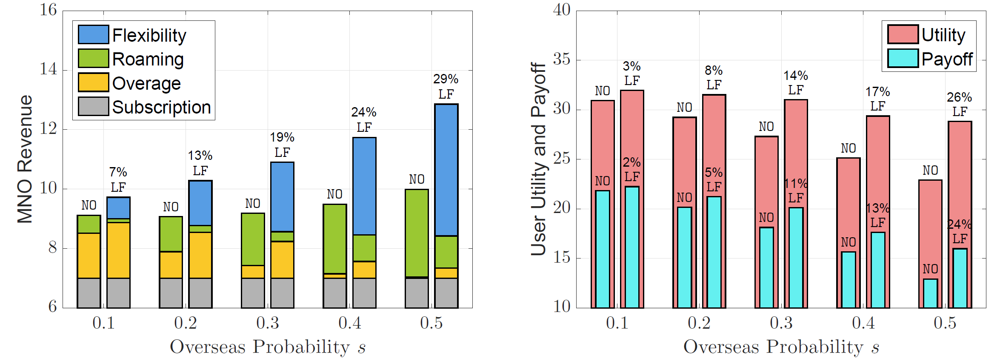

|
Research Areas
AoI in Real-time State Acquisition
Edge Computing & Cloud Computing
In mobile Internet ecosystem, Mobile Users (MUs) purchase wireless data services from Internet Service Provider (ISP) to access to Internet and acquire the interested content services (e.g., online game) from Content Provider (CP).
The popularity of intelligent functions (e.g., AI and 3D modeling) increases the computation-intensity of the content services, leading to a growing computation pressure for the MUs' resource-limited devices.
To this end, edge computing service is emerging as a promising approach to alleviate the MUs' computation pressure while keeping their quality-of-service, via offloading some computation tasks of MUs to edge (computing) servers deployed at the local network edge.
Thus, Edge Service Provider (ESP), who deploys the edge servers and offers the edge computing service, becomes an upcoming new stakeholder in the ecosystem.



Mobile Internet Pricing, and Mechanism Design
The growing data demand and more severe market competition force mobile network operators (MNOs) to offer more flexible wireless data services.
The classic wireless data service is a three-part tariff, consisting of a monthly data cap, a monthly subscription fee, and a per-unit fee (for exceeding the data cap).
The more flexible wireless data service often provides users with some additional flexibility in terms of time, user, and location.
-
Time-Flexibility: The rollover mechanism, allowing the unused data in the current month to be consumed in a future month, is a time-flexible mechanism.
In this reseach direction, we study the economic effect of different rollover mechanisms of AT&T and China Mobile.
Moreover, we take into account the pricing optimization, price discrimination based on the Contract Theory, and the game-theoretical analysis of market competition.

-
User-Flexibility: The trading market, allowing users to sell the leftover quota to or buy extra quota from others, is a user-flexible mechanism.
The interaction between MNO and mobile users is a Multi-Agent Dynamic Game.
In each time slot (e.g., every day), the MNO first determines the selling and buying prices, then each user decides his trading action.
Due to the availability of monthly data rollover, a user’s daily trading decision corresponds to a dynamic programming problem with two time scales (i.e., day-to-day and
month-to-month).
In this research direction, we find that the optimal trading policy has a target interval structure, specified by a buy-up-to threshold and a sell-down-to threshold in each time slot.
We also show that the rollover mechanism makes users sell less and buy more data, hence it increases the total demand while decreasing the total supply in the data trading
market.


-
Location-Flexibility: The Day-Pass service of AT&T, allowing users to access his domestic data service with a daily fee in overseas locations, is a location-flexible mechanism.
In this research direction, we study the economic effect of the location-flexibility on the overseas market.
The overseas market comprises users who travel overseas within a month, thus is month-varying.
Each user decides his joint flexibility configuration and data consumption (J-FCDC) every day.
The user’s J-FCDC problem is an on-line payoff maximization.
We analyze its off-line problem (i.e., NP-hard) and design an on-line strategy with provable performance.
We also propose a dynamic pricing policy for the location-flexible service without relying on the market statistic information.


|